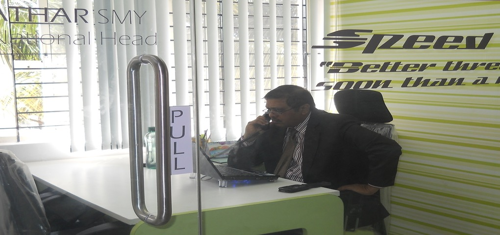

Certified Insurance Director (ID)
Certified ID credential supporting board-level governance, risk advisory, and IRDAI regulatory management.
Director & Principal Officer · Mazel Insurance Brokers (BasketOption.Insure)
Certified Insurance Director with 30+ years in governance, risk, and compliance. Guiding regulatory strategy at the board level across life, health, and general insurance in the Greater Bengaluru area.

Mohammed Yesdani Athar · Greater Bengaluru Area
Known among colleagues as a walking encyclopedia of insurance knowledge, Mohammed Yesdani Athar (S M Y Athar) is a Certified Insurance Director with 30+ years in governance, risk, and compliance with IRDAI regulations. He serves as Director and Principal Officer at Mazel Insurance Brokers Pvt Ltd (BasketOption.Insure), guiding regulatory strategy and board-level governance.
His career spans entrepreneurship, quality management, sales leadership, training, and executive broking. He helps organisations navigate IRDAI regulations, with deep expertise in the health insurance sector, ethical client education, and long-term relationship building.
"Learning is a lifelong process."
He holds a PGD MBA (Marketing) from Tasmac, Associate (AIII) from the Insurance Institute of India, a Specialized Diploma in Health Insurance, and the Brokers Exam for Principal Officer from NIA Pune. Prior roles include National Head at Basket Option Insurance Brokers, leadership at Star Health, HDFC Standard Life, and Max New York Life.
Leadership across regulatory strategy, broking, quality management, and insurance distribution — with 23+ years of documented industry experience.
Academic and professional qualifications that support insurance broking, health insurance specialization, and principal officer responsibilities.
Certified ID credential supporting board-level governance, risk advisory, and IRDAI regulatory management.
2012 – 2016 · Professional insurance qualification forming the foundation of industry expertise.
2011 – 2012 · Insurance Institute of India · Focused health insurance products and client education.
2016 · NIA Pune · Qualifying examination for principal officer responsibilities in insurance broking.
2006 – 2007 · Tasmac · Post Graduate Diploma supporting executive decision-making and strategy.
1981 – 1984 · Foundational academic qualification.
Professional recommendations from colleagues and clients on LinkedIn.
"Very professional and trust worthy finance adviser. Good to have you Mr Athar."
"Mr. Athar is a great leader. Highly disciplined, dedicated and a true professional. I admire him as a good human being and as a great professional."
Active across business forums and professional communities that support relationship building, referrals, and public engagement.
A blend of analytical interests and creative expression that reflects curiosity, communication skill, and personal passion.
Analytical interest in personality interpretation through handwriting patterns.
Study of non-verbal communication and human behavior.
Creative expression through performance and storytelling on screen.